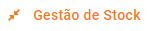
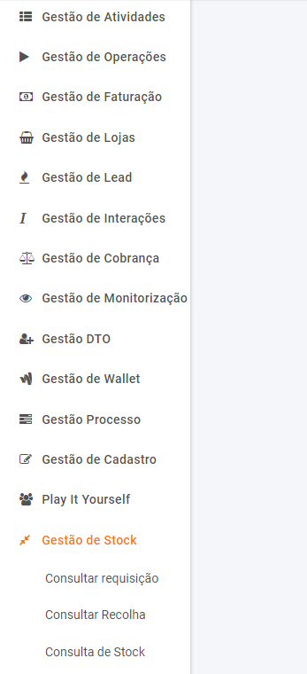

Gestão de Stock
O módulo de gestão de stock permite pesquisar e localizar requisições já registadas e executar um conjunto de operações sobre as requisições registadas.
Para aceder ás várias funcionalidades que constituem o módulo Gestão de Stock, o utilizador deverá ir na barra do Menu e procurar pelo menu , conforme imagem a seguir.

O menu é constituido por um conjunto de submenus:
|
Menu Gestão de Stock |
Sub-menus |
Descrição |
|
Funcionalidade que permite consultar todas as requisições existentes no sistema, com a possibilidade de ver detalhes, fazer nova requisição, feedback de logística e feedback de requerente. |
||
|
A finalidade de “ consulta recolhas” é acompanhar os pedidos de recolha de equipamentos ou mesmo o estado dos controlos feitos. |
||
|
|
Permite ao utilizador pesquisar pelos produtos que estão disponíveis no stock. |
Tabela 1 - Gestão de Stock - Sub-menus
Created with the Personal Edition of HelpNDoc: What is a Help Authoring tool?